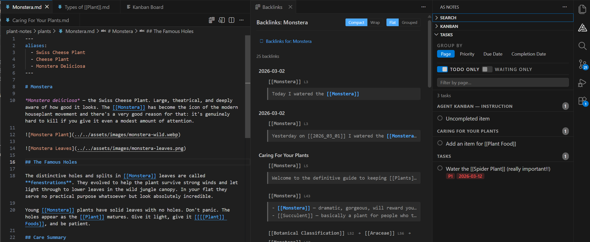

Introducing AS Notes
Thank you for finding your way to our new blog. We'd like to introduce you to AS Notes:
Most note-taking tools want you to leave your editor. AS Notes doesn't. It brings [[wikilink]] style knowledge management directly into VS Code, where many of us already spend most of our day.
No Electron wrapper. No separate app to context-switch into. Just your editor, your markdown files, and a lightweight SQLite index that ties everything together.

What you get
AS Notes is a Personal Knowledge Management System that runs as a VS Code extension. At its core: you write markdown files, link them with [[wikilinks]], and the extension handles resolution, backlinks, renaming, and navigation across your entire workspace.
But it goes further than that.
Wikilinks that actually work. Links resolve globally across your workspace. Nested links like [[Specific [[Topic]] Details]] create multiple navigable targets. Rename a link and every reference updates. Case-insensitive matching, page aliases, subfolder resolution - it handles the edge cases so you don't have to.
Task management built into your notes. Toggle TODOs with Ctrl+Shift+Enter. Add priority (#P1, #P2, #P3), due dates (#D-2026-03-20), and waiting flags (#W) as inline hashtags. The Tasks panel aggregates everything across your workspace with grouping by page, priority, due date, or completion date.
Kanban boards backed by markdown. Each card is a .md file with YAML front matter. Drag cards between lanes, add entries, attach files. Every change is a diffable text file you can version control.
Daily journaling. Ctrl+Alt+J creates today's journal from a template. A calendar panel in the sidebar shows which days have entries. Click any day to open it.
Backlinks with full context. The backlinks panel shows every incoming link as a chain - the full outline path from root to link. Group by page or by chain pattern. Click any link to jump straight to the source line.
Outliner mode. Toggle it on and every line starts with a bullet. Tab/Shift+Tab for indentation, Enter continues the list, and multi-line paste splits into individual bullets.
Slash commands. Type / for quick access to date insertion, code blocks, tables (with add/remove column and row operations), templates, and task metadata.
All of this runs on plain markdown files. No proprietary format. No lock-in. Git-friendly from day one.
Publishing your notes as a static site
This is the feature we've most recently shipped. AS Notes now includes a built-in tool that converts your markdown notes into a static website.
The documentation you're reading right now was written in AS Notes and published using the same tool.
How it works
Point the converter at a folder of markdown files and it produces clean HTML. Wikilinks between pages resolve to the correct .html links automatically. A navigation sidebar is generated from your public pages. Output filenames are slugified to clean URLs (Getting Started.md becomes getting-started.html).
You control what gets published with YAML front matter:
---
public: true
title: My Page
description: A short description for SEO
layout: docs
date: 2026-03-24
---
Pages without public: true are skipped. Or pass --default-public to publish everything unless a page opts out. Encrypted .enc.md files are always excluded - a hardcoded safety net.
Layouts and themes
Three built-in layouts ship out of the box:
- docs - sidebar navigation with content area (what you're looking at)
- blog - sidebar with a narrower, article-style content area and date display
- minimal - content only, no navigation
Two themes are included (default and dark), both producing clean, editable CSS. You can override per-page with front matter, bring your own stylesheets, or create entirely custom layouts with template tokens like {{content}}, {{nav}}, and .
Asset pipeline, SEO, and feeds
Referenced images are automatically discovered and copied to the output. Retina support is built in - per-image with {.retina}, per-page via front matter, or globally with --retina.
Every site gets a sitemap.xml and an RSS feed.xml generated automatically. Add description: front matter for <meta> SEO tags. Set --base-url for subdirectory deployments.
Run it anywhere
Install as an npm package for CI/CD:
npx asnotes-publish --config ./asnotes-publish.json
Or run it directly from VS Code with the AS Notes: Publish to HTML command.
The config file keeps things reproducible:
{
"inputDir": "./pages",
"outputDir": "../docs",
"defaultPublic": true,
"layout": "docs",
"theme": "default",
"baseUrl": ""
}
Deploy to GitHub Pages, Netlify, Vercel, Cloudflare Pages - anywhere that serves static files.
Custom navigation
Don't want auto-generated navigation? Create a nav.md at the root of your input directory. Write it in markdown with wikilinks and it becomes the sidebar for every page:
## Guides
- [[Getting Started]]
- [[Publishing a Static Site]]
---
## Reference
- [[Settings]]
- [[Wikilinks]]
Privacy first
AS Notes does not send your data anywhere. The index is a local SQLite database. Your encryption keys are stored in the OS keychain. Your notes stay on your machine (or wherever you choose to sync them).
Getting started
Install from the VS Code Marketplace. Open the Command Palette and run AS Notes: Initialise Workspace. That's it.
For a sample knowledge base to explore, clone the demo repository.
For publishing, the documentation covers the full setup - front matter fields, layouts, themes, asset pipeline, CI/CD configuration, and multi-site publishing.
AS Notes is free. Pro features (templates, table commands, kanban, encrypted notes) are available with a licence key from asnotes.io.